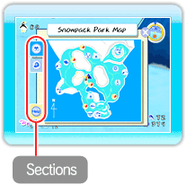
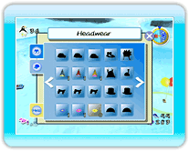

15 |
Menu pause |
 |
|

Appuyez sur Note : Si vous accédez au menu pause en appuyant sur Carte du parc Snowpack 
Cette page affiche la carte du parc. Pointez sur une icône pour afficher le nom des mini-jeux, les zones de rassemblement des pingouins, ainsi que d’autres endroits intéressants. Note : Si s’affiche lorsque vous pointez sur une icône ballon Accessoires À travers le jeu, vous aurez la possibilité de collectionner de nombreux accessoires pour habiller les pingouins. Dans la section des accessoires, vous trouverez tous ceux que vous avez amassés durant votre partie. ・Coiffer un pingouin d’un accessoire 
Après avoir choisi un accessoire dans la section des accessoires, vous l’aurez en main après avoir quitté le menu. Placez-vous près du pingouin en tenant l’accessoire et appuyez sur Aide 
La section d'aide du menu pause fournit des renseignements sur l’humeur des pingouins et sur les commandes pour interagir avec eux. |
 |
 |
 |